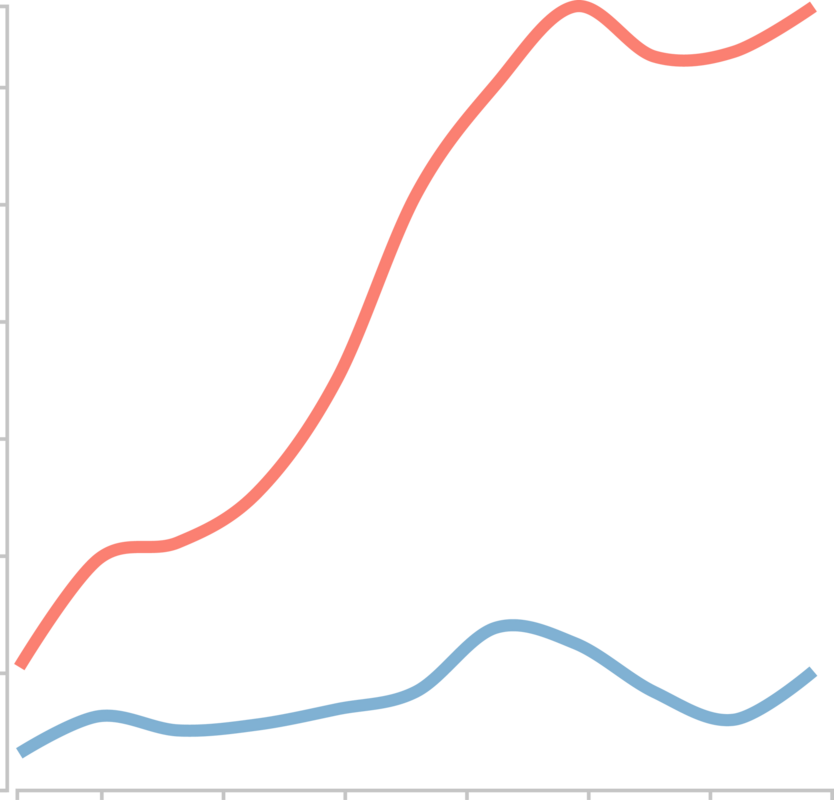

Accueil
A propos
Guide de datavisualisation - Version du 29 mai 2023
Guide de datavisualisation - Version du 29 mai 2023
Introduction
Diagrammes sectoriels
Diagrammes à barres

Diagrammes à lignes
Couleurs
Cartes